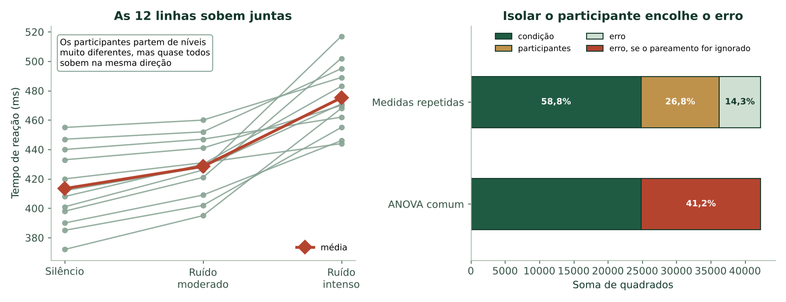
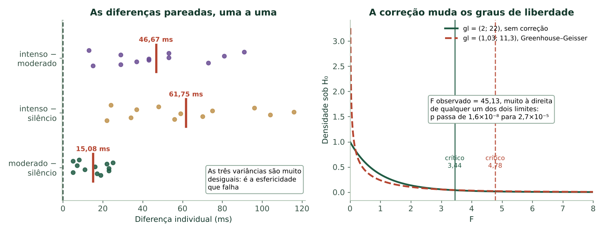

ANOVA de medidas repetidas
Compara três ou mais condições medidas nas mesmas unidades, isolando a variabilidade entre participantes do erro experimental.
Comece por aqui
Quando as mesmas pessoas passam por todas as condições, duas coisas mudam. A primeira é boa: cada participante serve de controle de si mesmo, e a variabilidade entre indivíduos — quase sempre a maior fonte de ruído — pode ser retirada do erro experimental. A segunda exige cuidado: as observações deixam de ser independentes, e a ANOVA de um fator comum passa a ser inválida.
No exemplo desta ficha, 26,8% da variação total vem das diferenças entre participantes. Isolar essa parcela derruba o quadrado médio do erro de 527,8 para 275,6 — quase pela metade — e o F sobe de 23,6 para 45,1. O mesmo experimento, analisado corretamente, tem cerca do dobro da sensibilidade.
O que é o teste
A variação total é dividida em três parcelas em vez de duas: a que vem das diferenças entre participantes, a que vem do efeito das condições e o que sobra, o erro — tecnicamente, a interação participante × condição, isto é, o quanto cada pessoa reage às condições de forma diferente das demais. O teste do efeito das condições usa só essa última parcela como denominador.

Ao remover a variação entre participantes, os graus de liberdade do erro caem de \(N-k\) para \((n-1)(k-1)\). No exemplo, de 33 para 22. Vale a pena sempre que a correlação entre as medidas repetidas for apreciável — o que é quase sempre o caso.
Pressupostos e como verificá-los
| Pressuposto | Por que importa | Como verificar |
|---|---|---|
| Participantes independentes entre si | A dependência permitida é só dentro do participante. | Delineamento. |
| Todos medidos em todas as condições | O delineamento tem de ser completo. | table(participante, condicao); faltantes exigem um modelo misto. |
| Resíduos aproximadamente normais | Sustenta a distribuição F. | shapiro.test nos resíduos do modelo. |
| Esfericidade: as variâncias das diferenças entre pares de condições são iguais | É o pressuposto crítico, e o único que não existe na ANOVA comum. | Teste de Mauchly; com k = 2 é automaticamente satisfeito. |
| Ausência de valores extremos | Um participante atípico afeta todas as condições. | Gráfico de perfis. |
Se você calcular todas as diferenças entre pares de condições (A−B, A−C, B−C) e as variâncias dessas diferenças forem parecidas, há esfericidade. Se forem muito desiguais, não há — e o valor-p sem correção fica menor do que deveria, produzindo falsos positivos. No exemplo desta ficha as três variâncias são 56,99, 978,39 e 618,06: a violação é severa.
Hipóteses e estatística de teste
Em que:
- \(n\)
- número de participantes
- \(k\)
- número de condições
- \(\bar{y}_{i\cdot}\)
- média do participante i
- \(\bar{y}_{\cdot j}\)
- média da condição j
- \(\bar{y}\)
- média geral
- \(\varepsilon\)
- fator de correção da esfericidade, entre 1/(k−1) e 1
Exemplo numérico, passo a passo
Doze participantes, três condições de ruído. Médias: 413,42, 428,50 e 475,17 ms; média geral 439,03.
\[\begin{aligned}SQ_{\text{condição}} &= 12\bigl[(413{,}42-439{,}03)^2 \\ &\quad +(428{,}50-439{,}03)^2 \\ &\quad +(475{,}17-439{,}03)^2\bigr] \\ &= 24\,873{,}39,\end{aligned}\] com 2 gl.
\(SQ_{\text{participantes}}=11\,354{,}97\) (11 gl) e, por diferença, \[\begin{aligned}SQ_{\text{erro}} &= 42\,290{,}97-11\,354{,}97 \\ &\quad -24\,873{,}39 \\ &= 6\,062{,}61,\end{aligned}\] com \((12-1)(3-1)=22\) gl.
Como a esfericidade falha (Mauchly: \(W=0{,}0536\), \(p=4{,}4\times10^{-7}\)), aplica-se \(\varepsilon_{GG}=0{,}5138\). O \(F\) não muda; mudam os graus de liberdade, de (2; 22) para (1,028; 11,303), e o valor-p passa a \(2{,}7\times10^{-5}\).
As correções de esfericidade
| Correção | Como funciona | Quando usar |
|---|---|---|
| Nenhuma | ε = 1. | Só quando Mauchly não rejeita e k = 2, ou quando ε estimado > 0,95. |
| Greenhouse–Geisser | ε estimado dos autovalores da matriz de covariâncias transformada. | Recomendação geral; levemente conservadora. Use quando ε̂ < 0,75. |
| Huynh–Feldt | Correção do viés do ε de GG; sempre ≥ ε de GG. | Quando ε̂ > 0,75; pode passar de 1 e é então truncada. |
| Limite inferior | ε = 1/(k − 1): o pior caso possível. | Muito conservadora; serve como verificação de segurança. |
| Abordagem multivariada (MANOVA) | Não supõe esfericidade alguma. | Quando n é bem maior que k. |
Propriedades
- Com k = 2, equivale ao teste t pareado, e a esfericidade é trivialmente satisfeita.
- \(1/(k-1)\leq\varepsilon\leq1\); quanto menor, mais severa a violação.
- As correções nunca alteram a estatística F, apenas os graus de liberdade e, portanto, o valor-p.
- Tamanho de efeito: \(\eta^2_p=SQ_{\text{cond}}/(SQ_{\text{cond}}+SQ_{\text{erro}})\) e \(\eta^2_G\) (generalizado), que é comparável entre delineamentos.
- O modelo equivale a um modelo misto com intercepto aleatório por participante e estrutura de covariância composta simétrica.
Como interpretar os resultados
| Elemento | O que informa | Cuidado |
|---|---|---|
| Error: participante | A linha do estrato entre participantes. | Não se testa; serve para separar a variação. |
| Error: participante:condicao | O estrato que contém o teste. | É aqui que estão F e o valor-p. |
| F e gl | A razão e seus graus de liberdade. | Reporte os gl corrigidos quando usar GG ou HF. |
| Mauchly | Teste da esfericidade. | Sensível ao tamanho da amostra; não decida só por ele. |
| ε de GG e HF | Severidade da violação. | Perto de 1 indica esfericidade. |
| η² parcial e generalizado | Magnitude do efeito. | O generalizado é o comparável entre estudos. |
Reporte, no padrão usual: F(gl corrigidos) = valor, p = valor, ε de GG = valor, η²G = valor, seguido das médias de cada condição e das comparações múltiplas.
Como executar no R e em Python
Onde executar o código em Python
Não é preciso instalar nada: o Google Colab é um computador na nuvem, gratuito, que executa Python pelo navegador e já traz as bibliotecas usadas aqui (numpy, scipy e matplotlib).
A rota mais direta em R base é aov() com o termo Error(participante/condicao), mas ela não fornece o teste de esfericidade. Para obtê-lo, use ez::ezANOVA() ou rstatix::anova_test(), que devolvem Mauchly, as correções de Greenhouse–Geisser e Huynh–Feldt e os tamanhos de efeito em uma única tabela; ou car::Anova() na forma multivariada. As comparações saem de pairwise.t.test(..., paired = TRUE) ou de emmeans. Os dados precisam estar em formato longo, com uma coluna identificando o participante.
modelo <- aov(tempo ~ condicao + Error(participante / condicao), data = longo)
summary(modelo)
ez::ezANOVA(data = longo, dv = tempo, wid = participante, within = condicao, detailed = TRUE)
Exemplo de aplicação
Contexto dos dados
Os dados do exemplo são fictícios e foram criados pelo autor. Doze participantes executaram uma tarefa de tempo de reação em três condições de ruído de fundo — silêncio, ruído moderado e ruído intenso —, todos passando pelas três. É o mesmo conjunto analisado na ficha do teste de Mauchly, onde a esfericidade foi testada; aqui completamos a análise.
Código em R
# ANOVA de medidas repetidas: exemplo completo ----
# Pacotes: stats (base), ez ou rstatix (esfericidade e correções), emmeans (comparações)
# install.packages(c("ez", "rstatix", "emmeans"))
# 1. Dados fictícios: tempo de reação (ms) de 12 participantes em três condições de ruído.
# É o mesmo conjunto usado na ficha do teste de esfericidade de Mauchly.
tempos <- matrix(c(412, 428, 471, 385, 402, 455, 440, 447, 462, 398, 421, 502,
455, 460, 489, 372, 395, 468, 420, 431, 444, 401, 426, 517,
433, 441, 470, 390, 409, 446, 447, 452, 495, 408, 430, 483),
nrow = 12, byrow = TRUE,
dimnames = list(paste0("p", 1:12),
c("silencio", "moderado", "intenso")))
tempos
colMeans(tempos)
apply(tempos, 2, sd)
# 2. Formato longo, que é o exigido pelas funções de modelagem
longo <- data.frame(
participante = factor(rep(rownames(tempos), times = 3)),
condicao = factor(rep(colnames(tempos), each = 12),
levels = c("silencio", "moderado", "intenso")),
tempo = as.vector(tempos))
str(longo)
# 3. O modelo: o termo Error() declara que as medidas são do mesmo participante
modelo <- aov(tempo ~ condicao + Error(participante / condicao), data = longo)
summary(modelo)
# 4. Esfericidade: teste de Mauchly e correções
# Rota 1 - com o pacote ez, que entrega tudo em uma tabela
library(ez)
ezANOVA(data = longo, dv = tempo, wid = participante, within = condicao, detailed = TRUE)
# Rota 2 - com stats, pela abordagem multivariada
mlm <- lm(tempos ~ 1)
desenho <- data.frame(condicao = factor(colnames(tempos), levels = colnames(tempos)))
library(car)
av <- Anova(mlm, idata = desenho, idesign = ~condicao, type = "III")
summary(av, multivariate = FALSE) # traz Mauchly, GG e HF
# Rota 3 - com rstatix
library(rstatix)
anova_test(data = longo, dv = tempo, wid = participante, within = condicao)
# 5. Tamanho de efeito
# eta parcial = SQ_condicao / (SQ_condicao + SQ_erro)
# eta generalizado leva também a variabilidade entre participantes
# rstatix::anova_test() já devolve o eta generalizado (ges)
# 6. Comparações múltiplas
with(longo, pairwise.t.test(tempo, condicao, paired = TRUE, p.adjust.method = "holm"))
library(emmeans)
emmeans(modelo, ~condicao) |> pairs(adjust = "holm")
# 7. Alternativas
friedman.test(tempos) # não paramétrica
library(lme4)
mm <- lmer(tempo ~ condicao + (1 | participante), data = longo) # modelo misto
anova(mm)
# 8. Gráficos
par(mfrow = c(1, 2))
matplot(t(tempos), type = "b", pch = 19, lty = 1, col = "gray65", xaxt = "n",
xlab = "Condição", ylab = "Tempo de reação (ms)")
axis(1, at = 1:3, labels = colnames(tempos))
lines(colMeans(tempos), type = "b", pch = 18, col = "red", lwd = 3, cex = 1.8)
boxplot(tempo ~ condicao, data = longo, col = "gray85",
xlab = "Condição", ylab = "Tempo de reação (ms)")
par(mfrow = c(1, 1))
A mesma análise em Python, com os resultados
Cole o código em um notebook do Google Colab ↗ e execute com Shift+Enter. Os valores abaixo são a saída desse código.
# Bibliotecas: numpy, scipy e matplotlib (já instaladas no Google Colab)
import numpy as np
from scipy import stats
import itertools
# Dados fictícios: tempo de reação (ms) de 12 participantes em três condições de ruído.
# É o mesmo conjunto usado na ficha do teste de esfericidade de Mauchly.
dados = np.array([
[412, 428, 471], [385, 402, 455], [440, 447, 462], [398, 421, 502],
[455, 460, 489], [372, 395, 468], [420, 431, 444], [401, 426, 517],
[433, 441, 470], [390, 409, 446], [447, 452, 495], [408, 430, 483]], dtype=float)
condicoes = ["Silêncio", "Ruído moderado", "Ruído intenso"]
n, k = dados.shape
print(f"{n} participantes x {k} condições")
print("condição média DP")
for j, cd in enumerate(condicoes):
print(f"{cd:<18}{dados[:, j].mean():7.2f} {dados[:, j].std(ddof=1):6.2f}")
print(f"Média geral = {dados.mean():.4f}")
print("Média de cada participante:", np.round(dados.mean(axis=1), 2))
# 1. Decomposição da soma de quadrados
media_geral = dados.mean()
m_cond = dados.mean(axis=0) # média de cada condição
m_suj = dados.mean(axis=1) # média de cada participante
SQ_total = ((dados - media_geral)**2).sum()
SQ_suj = k * ((m_suj - media_geral)**2).sum() # entre participantes
SQ_cond = n * ((m_cond - media_geral)**2).sum() # efeito da condição
SQ_erro = SQ_total - SQ_suj - SQ_cond # resíduo (interação suj x cond)
gl_suj, gl_cond, gl_erro = n - 1, k - 1, (n - 1) * (k - 1)
QM_cond, QM_erro = SQ_cond / gl_cond, SQ_erro / gl_erro
F = QM_cond / QM_erro
p = stats.f.sf(F, gl_cond, gl_erro)
print(f"\nSQ total = {SQ_total:.2f} = SQ participantes ({SQ_suj:.2f}) + SQ condição ({SQ_cond:.2f}) + SQ erro ({SQ_erro:.2f})")
print("\nFonte GL SQ QM F p-valor")
print(f"Participantes {gl_suj:3d} {SQ_suj:9.2f} {SQ_suj/gl_suj:9.2f}")
print(f"Condição {gl_cond:3d} {SQ_cond:9.2f} {QM_cond:9.2f} {F:7.3f} {p:.3e}")
print(f"Erro (suj x cond) {gl_erro:3d} {SQ_erro:9.2f} {QM_erro:9.2f}")
print(f"Total {n*k-1:3d} {SQ_total:9.2f}")
# 2. O que se perderia ignorando o pareamento (ANOVA de um fator comum)
Fi, pi = stats.f_oneway(*[dados[:, j] for j in range(k)])
SQ_dentro_ind = SQ_suj + SQ_erro
print(f"\nSe os dados fossem tratados como independentes:")
print(f" F = {Fi:.3f}, gl = ({k-1}; {n*k-k}), p-valor = {pi:.3e}")
print(f" o resíduo seria {SQ_dentro_ind:.2f} em {n*k-k} gl -> QM = {SQ_dentro_ind/(n*k-k):.2f},")
print(f" contra QM do erro = {QM_erro:.2f} no modelo de medidas repetidas.")
print(f" A variabilidade entre participantes ({100*SQ_suj/SQ_total:.1f}% do total) iria para o erro.")
# 3. Esfericidade: Mauchly, Greenhouse-Geisser e Huynh-Feldt
C = np.array([[1, -1, 0], [1, 1, -2]], dtype=float)
C = C / np.sqrt((C**2).sum(axis=1, keepdims=True)) # contrastes ortonormais
S = np.cov(dados, rowvar=False)
Sc = C @ S @ C.T
pp = k - 1
W_m = np.linalg.det(Sc) / (np.trace(Sc) / pp)**pp
f_corr = 1 - (2*pp**2 + pp + 2) / (6 * pp * (n - 1))
chi2_m = -(n - 1) * f_corr * np.log(W_m)
gl_m = pp * (pp + 1) / 2 - 1
p_m = stats.chi2.sf(chi2_m, gl_m)
autov = np.linalg.eigvalsh(Sc)
gg = autov.sum()**2 / (pp * (autov**2).sum())
hf = min(1.0, (n * pp * gg - 2) / (pp * (n - 1 - pp * gg)))
li = 1 / pp
print(f"\nMauchly: W = {W_m:.5f}, qui-quadrado = {chi2_m:.4f}, gl = {int(gl_m)}, p-valor = {p_m:.3e}")
print(f"Epsilon de Greenhouse-Geisser = {gg:.4f} | Huynh-Feldt = {hf:.4f} | limite inferior = {li:.4f}")
print("\nValor-p sob cada correção (a estatística F não muda; mudam os graus de liberdade):")
for nome, e in [("sem correção", 1.0), ("Greenhouse-Geisser", gg), ("Huynh-Feldt", hf), ("limite inferior", li)]:
print(f" {nome:<20} gl = ({e*gl_cond:5.3f}; {e*gl_erro:6.3f}) p-valor = {stats.f.sf(F, e*gl_cond, e*gl_erro):.3e}")
# 4. Tamanho de efeito
eta2_p = SQ_cond / (SQ_cond + SQ_erro)
eta2_g = SQ_cond / (SQ_cond + SQ_suj + SQ_erro)
print(f"\neta² parcial = {eta2_p:.4f} | eta² generalizado = {eta2_g:.4f}")
# 5. Comparações múltiplas: testes t pareados com ajuste de Holm e de Bonferroni
print("\nComparações pareadas (teste t pareado):")
brutos = []
pares = list(itertools.combinations(range(k), 2))
for i, j in pares:
d = dados[:, j] - dados[:, i]
t, pv = stats.ttest_rel(dados[:, j], dados[:, i])
dz = d.mean() / d.std(ddof=1)
brutos.append(pv)
print(f" {condicoes[j]} - {condicoes[i]}: diferença = {d.mean():+7.2f} ms | "
f"t({n-1}) = {t:+.4f} | p bruto = {pv:.3e} | d de Cohen (dz) = {dz:.3f}")
ordem = np.argsort(brutos)
holm = np.empty(len(brutos))
acum = 0.0
for pos, idx in enumerate(ordem):
acum = max(acum, (len(brutos) - pos) * brutos[idx])
holm[idx] = min(1.0, acum)
print("\npar p bruto Bonferroni Holm")
for m, (i, j) in enumerate(pares):
print(f"{condicoes[j]} - {condicoes[i]:<18} {brutos[m]:.3e} {min(1, 3*brutos[m]):.3e} {holm[m]:.3e}")
# 6. Alternativa não paramétrica
Q, pQ = stats.friedmanchisquare(*[dados[:, j] for j in range(k)])
print(f"\nTeste de Friedman: Q = {Q:.4f}, gl = {k-1}, p-valor = {pQ:.3e}")
print(f"W de Kendall = {Q/(n*(k-1)):.4f}")
# 7. Normalidade dos resíduos do modelo
res = dados - m_suj[:, None] - m_cond[None, :] + media_geral
print(f"\nShapiro-Wilk dos resíduos: W = {stats.shapiro(res.ravel())[0]:.4f}, p-valor = {stats.shapiro(res.ravel())[1]:.4f}")
Resultados da execução
12 participantes x 3 condições condição média DP Silêncio 413.42 26.09 Ruído moderado 428.50 19.82 Ruído intenso 475.17 22.59 Média geral = 439.0278 Média de cada participante: [437. 414. 449.67 440.33 468. 411.67 431.67 448. 448. 415. 464.67 440.33] SQ total = 42290.97 = SQ participantes (11354.97) + SQ condição (24873.39) + SQ erro (6062.61) Fonte GL SQ QM F p-valor Participantes 11 11354.97 1032.27 Condição 2 24873.39 12436.69 45.130 1.637e-08 Erro (suj x cond) 22 6062.61 275.57 Total 35 42290.97 Se os dados fossem tratados como independentes: F = 23.563, gl = (2; 33), p-valor = 4.398e-07 o resíduo seria 17417.58 em 33 gl -> QM = 527.81, contra QM do erro = 275.57 no modelo de medidas repetidas. A variabilidade entre participantes (26.8% do total) iria para o erro. Mauchly: W = 0.05365, qui-quadrado = 29.2533, gl = 2, p-valor = 4.444e-07 Epsilon de Greenhouse-Geisser = 0.5138 | Huynh-Feldt = 0.5180 | limite inferior = 0.5000 Valor-p sob cada correção (a estatística F não muda; mudam os graus de liberdade): sem correção gl = (2.000; 22.000) p-valor = 1.637e-08 Greenhouse-Geisser gl = (1.028; 11.303) p-valor = 2.667e-05 Huynh-Feldt gl = (1.036; 11.395) p-valor = 2.501e-05 limite inferior gl = (1.000; 11.000) p-valor = 3.296e-05 eta² parcial = 0.8040 | eta² generalizado = 0.5881 Comparações pareadas (teste t pareado): Ruído moderado - Silêncio: diferença = +15.08 ms | t(11) = +6.9212 | p bruto = 2.516e-05 | d de Cohen (dz) = 1.998 Ruído intenso - Silêncio: diferença = +61.75 ms | t(11) = +6.8387 | p bruto = 2.806e-05 | d de Cohen (dz) = 1.974 Ruído intenso - Ruído moderado: diferença = +46.67 ms | t(11) = +6.5025 | p bruto = 4.412e-05 | d de Cohen (dz) = 1.877 par p bruto Bonferroni Holm Ruído moderado - Silêncio 2.516e-05 7.549e-05 7.549e-05 Ruído intenso - Silêncio 2.806e-05 8.418e-05 7.549e-05 Ruído intenso - Ruído moderado 4.412e-05 1.324e-04 7.549e-05 Teste de Friedman: Q = 24.0000, gl = 2, p-valor = 6.144e-06 W de Kendall = 1.0000 Shapiro-Wilk dos resíduos: W = 0.9851, p-valor = 0.8982

| Fonte | GL | SQ | QM | F | p |
|---|---|---|---|---|---|
| Participantes | 11 | 11 354,97 | 1 032,27 | — | — |
| Condição | 2 | 24 873,39 | 12 436,69 | 45,130 | 1,64 × 10⁻⁸ |
| Erro (participante × condição) | 22 | 6 062,61 | 275,57 | — | — |
| Total | 35 | 42 290,97 | — | — | — |
| Elemento | Valor | Leitura |
|---|---|---|
| Médias (ms) | 413,42 / 428,50 / 475,17 | Silêncio / moderado / intenso. |
| Mauchly | W = 0,0536; χ² = 29,25; p = 4,4 × 10⁻⁷ | Esfericidade violada. |
| ε de Greenhouse–Geisser | 0,5138 | Próximo do limite inferior (0,5): violação severa. |
| ε de Huynh–Feldt | 0,5180 | Praticamente igual. |
| p corrigido (GG) | 2,67 × 10⁻⁵ | Conclusão inalterada. |
| p corrigido (HF) | 2,50 × 10⁻⁵ | Idem. |
| η² parcial | 0,804 | Efeito muito grande. |
| η² generalizado | 0,588 | A medida comparável entre delineamentos. |
| Shapiro–Wilk dos resíduos | W = 0,985; p = 0,898 | Normalidade atendida. |
| Comparações (Holm) | Todas as três com p = 7,5 × 10⁻⁵ | As três condições diferem entre si. |
| Diferenças (ms) | +15,08 / +61,75 / +46,67 | Moderado−silêncio, intenso−silêncio, intenso−moderado. |
| Se o pareamento fosse ignorado | F(2; 33) = 23,563; p = 4,4 × 10⁻⁷ | Mesma conclusão, metade da sensibilidade. |
Leitura: o ruído aumenta o tempo de reação, e as três condições se separam entre si. O salto maior está entre o ruído moderado e o intenso (46,67 ms) — o incômodo não cresce de forma linear com o nível de ruído.
Dois pontos merecem comentário. O primeiro é que a correção de Greenhouse–Geisser, apesar de severa (os graus de liberdade caem de 2 para 1,03), não altera a conclusão: quando o efeito é grande, a correção é um seguro barato. O segundo é que o teste de Friedman aplicado a esses dados devolve o valor máximo possível da estatística e W de Kendall igual a 1 — todos os doze participantes ordenaram as três condições exatamente do mesmo modo. É uma concordância perfeita, informativa em si, mas que torna a versão não paramétrica pouco útil aqui: ela já não consegue distinguir graus de evidência.
Erros comuns
| Erro | Como evitar |
|---|---|
| Usar a ANOVA de um fator comum | Ela trata as medidas do mesmo participante como independentes e joga fora o ganho do pareamento. |
Esquecer o termo Error() | Sem ele, aov() ajusta o modelo errado em silêncio. |
| Ignorar a esfericidade | Sem correção, o valor-p fica menor do que deveria. |
| Tratar Mauchly como decisivo | Com n pequeno ele quase nunca rejeita; com n grande rejeita por pouco. Olhe também o ε estimado. |
| Aplicar correção com k = 2 | Com duas condições a esfericidade é automática e ε = 1. |
| Reportar gl não inteiros como se fossem inteiros | Os gl corrigidos são fracionários. |
| Perder participantes com dados faltantes | aov() descarta o participante inteiro; um modelo misto aproveita o que há. |
| Confundir η² parcial com η² generalizado | O parcial é maior e não é comparável entre delineamentos. |
Alternativas e fluxo de trabalho
| Procedimento | Quando preferir |
|---|---|
| ANOVA mista | Há também um fator entre participantes (grupos). |
Modelo misto (lme4::lmer) | Dados faltantes, covariáveis, estruturas de covariância ou mais de um nível de agrupamento. |
Abordagem multivariada (car::Anova) | n confortavelmente maior que k; não exige esfericidade. |
| Teste de Friedman | Resposta ordinal ou assimetria forte. |
| Teste t pareado | Apenas duas condições. |
| MANOVA | Várias respostas diferentes medidas no mesmo indivíduo. |
| Teste de permutação dentro de participantes | Amostra pequena, com interesse nas médias. |
| GEE | Interesse no efeito médio populacional, com respostas não normais. |
- Confirme que o delineamento é completo e que cada participante passou por todas as condições.
- Faça o gráfico de perfis: ele revela participantes atípicos e inversões de ordem.
- Ajuste o modelo com o termo de erro correto.
- Verifique a esfericidade e escolha a correção.
- Reporte F, os graus de liberdade corrigidos, o valor-p, ε e o tamanho de efeito.
- Faça as comparações pareadas com ajuste.
- Considere o modelo misto se houver dados faltantes ou covariáveis.
Referências desta ficha
- GREENHOUSE, Samuel W.; GEISSER, Seymour. On methods in the analysis of profile data. Psychometrika, v. 24, n. 2, p. 95-112, 1959.
- HUYNH, Huynh; FELDT, Leonard S. Estimation of the Box correction for degrees of freedom from sample data in randomized block and split-plot designs. Journal of Educational Statistics, v. 1, n. 1, p. 69-82, 1976.
- MAUCHLY, John W. Significance test for sphericity of a normal n-variate distribution. The Annals of Mathematical Statistics, v. 11, n. 2, p. 204-209, 1940.
- BOX, George E. P. Some theorems on quadratic forms applied in the study of analysis of variance problems, II: effects of inequality of variance and of correlation between errors in the two-way classification. The Annals of Mathematical Statistics, v. 25, n. 3, p. 484-498, 1954.
- MAXWELL, Scott E.; DELANEY, Harold D.; KELLEY, Ken. Designing experiments and analyzing data: a model comparison perspective. 3. ed. New York: Routledge, 2018.
- KUTNER, Michael H. et al. Applied linear statistical models. 5. ed. Boston: McGraw-Hill Irwin, 2005.
- MONTGOMERY, Douglas C. Design and analysis of experiments. 10. ed. Hoboken: Wiley, 2019.
- OLEJNIK, Stephen; ALGINA, James. Generalized eta and omega squared statistics: measures of effect size for some common research designs. Psychological Methods, v. 8, n. 4, p. 434-447, 2003.
- R CORE TEAM. R: a language and environment for statistical computing. Vienna: R Foundation for Statistical Computing, 2026. Disponível em: https://www.r-project.org/. (Funções
aovcomError()epairwise.t.test, pacotestats.) - LAWRENCE, Michael A. ez: easy analysis and visualization of factorial experiments. R package. Disponível em: https://CRAN.R-project.org/package=ez. (Função
ezANOVA.) - KASSAMBARA, Alboukadel. rstatix: pipe-friendly framework for basic statistical tests. R package. Disponível em: https://CRAN.R-project.org/package=rstatix. (Função
anova_test.) - LENTH, Russell V. emmeans: estimated marginal means, aka least-squares means. R package. Disponível em: https://CRAN.R-project.org/package=emmeans.
- POSIT TEAM. RStudio: integrated development environment for R. Boston: Posit Software, PBC. Disponível em: https://posit.co/download/rstudio-desktop/.
- VIRTANEN, Pauli et al. SciPy 1.0: fundamental algorithms for scientific computing in Python. Nature Methods, v. 17, p. 261-272, 2020. DOI: 10.1038/s41592-019-0686-2. (Funções do módulo
scipy.stats.) - HARRIS, Charles R. et al. Array programming with NumPy. Nature, v. 585, p. 357-362, 2020. DOI: 10.1038/s41586-020-2649-2.
- HUNTER, John D. Matplotlib: a 2D graphics environment. Computing in Science & Engineering, v. 9, n. 3, p. 90-95, 2007.
- GOOGLE. Google Colaboratory. Disponível em: https://colab.research.google.com/.
- As figuras desta ficha foram elaboradas pelo autor.

Prof. Dr. Cássius Henrique Xavier Oliveira
Professor · ICTIN/UFLA · Estatística, Confiabilidade e Ciência de Dados.
Conheça minha trajetória e projetos →